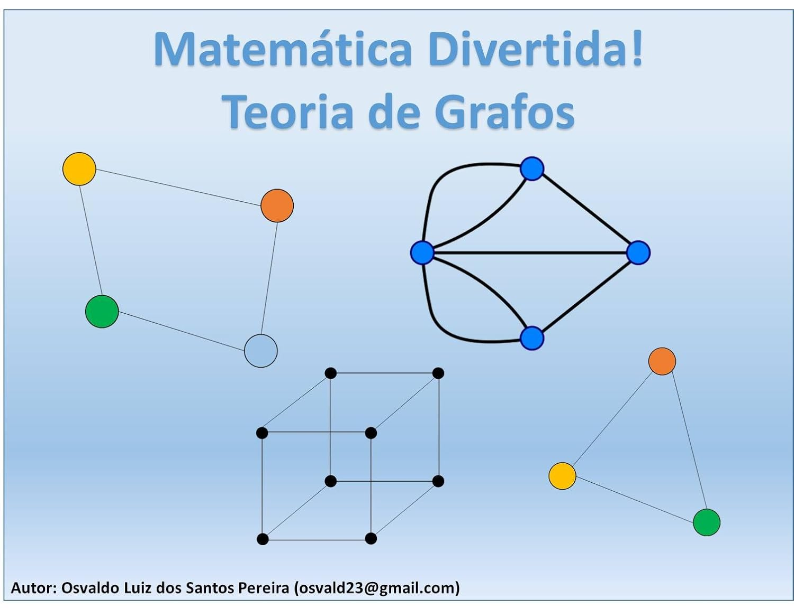
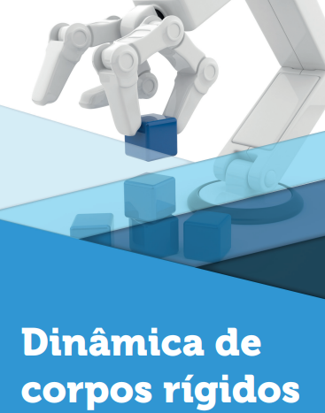

This series aims to present and approach mathematical topics in a playful way, presenting examples and introducing children from 8 years old who are studying mathematics for the first time, to even adults who want to study mathematics for various reasons. The subject covered in this first book is graph theory, a subject that is very present in several areas of mathematics and computer science.
 More infoIn this book we will learn to describe the movements of rigid bodies, whether moving in a straight line or rotating, on a plane or in three-dimensional space.
 More info